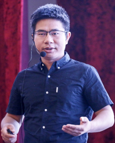

受权发布|山东大学首期基层党建创新案例写作研读班成员招募通知
收录于合集 #学习与工作机会 3个
2021年，恰值中国共产党成立一百周年。百年沧桑间，世界各国政局风云变幻、此起彼伏。而中国共产党建立的红色政权不仅没有式微，反而焕发出无限生机活力。探索中国共产党历久不衰的奥秘、总结中国共产党执政经验成为当下中国政治研究的核心要义。长期以来，中国共产党自创建以来就十分重视加强党的自身建设。早在1939年毛泽东在《<共产党人>发刊词》中便将党的建设看做是中国共产党在中国革命中战胜敌人的三个法宝。基层党组织更被视为中国共产党的执政之基、力量之源。改革开放以前，中国共产党的基层党组织建设集中于工厂、矿山、商店、农村等各个基层单位。改革开放以后，尤其是21世纪以来，中国社会结构发生巨大变化，中国共产党在统筹农村、高校、国有企业党建的同时，不仅在城市社区广泛探索党的基层组织建设模式，也将新经济组织和新社会组织（简称“两新”）纳入基层党建范畴。这一过程中，基层党建创新实践的研究价值不断凸现出来。
在此背景下，山东大学人文社会科学青岛研究院“互联网+”党建研究中心紧扣时代脉搏和核心理论关怀，继中心主任方雷教授领衔出版《新时代基层党建创新形态研究丛书》之后，隆重推出“基层党建案例库建设”项目。基层党建创新案例写作研读班作为该项目的重要组成部分，对于总结全国基层党建创新实践、培育基层党建创新案例研究人才和基层党建案例写作共同体具有重要意义。基层党建创新案例写作研读班计划通过不定期邀请党建研究和案例写作专家进行线上讲座、开展基层党建创新相关理论文献和案例研讨、组织实地调研等方式进行。
日前，山东大学人文社会科学青岛研究院“互联网+”党建研究中心面向全国相关专业在读研究生和实务工作者招募首期案例写作研读班成员。 为保证研读质量，本期研读班人数限定在20人以内。研读班将于10月初正式启动，研读班成员不收取任何费用。
基本内容：
1. 参与基层党建创新案例库建设培训讲座
2. 参与基层党建创新相关理论文献和案例的研讨
3. 在专家指导下参与基层党建案例写作
4. 根据个人情况选择参与基层党建创新实地调研
报名条件：
1. 对基层党建创新有浓厚的研究兴趣
2. 政治学、公共管理学、社会学、法学等社会科学类专业的在读硕士生或博士生，或相关专业背景的实务工作者，地域不限
3. 能够积极参与党建案例写作研读活动，保证每周累计不低于 6小时 的时间投入
潜在收获：
1. 研读班定制文献包及必要的调研补助
2. 研读班专家培训指导机会
3. 山东大学基层党建创新案例写作研读班结业证书
4. 作品入选山东大学基层党建案例库并公开出版的机会
5. 一群志同道合的学术研究伙伴
研读班师资专家简介
慕玲，清华大学公共管理学院院长助理、教学办主任、案例中心主任，中国案例中心教学的开拓者。
方雷，山东大学特聘教授、二级教授，人文社科青岛研究院院长，“互联网+”党建研究中心主任，政治学与公共管理学院和马克思主义学院教授博士生导师。教育部2007年度“新世纪优秀人才”，国务院政府特殊津贴专家，宝钢优秀教师；中组部全国干部教育师资库首批专家，山东省有突出贡献的中青年专家、山东省高端智库首批岗位专家、青岛市拔尖人才；兼任教育部政治学类专业教学指导委员会委员、中国政治学会常务理事兼副秘书长。长期从事政治学理论与方法、政党政治、基层党建研究工作。先后主持30余项国家级、省部级等各类课题；在《马克思主义研究》、《文史哲》等刊物上发表了90余篇学术论文，在《人民日报》《求是网》《光明网》发表时评20余篇；撰写学术著作7部，出版教材3部。近期主编出版“新时代基层党建创新形态研究丛书”（五册）。
吴新叶，同济大学政治与国际关系学院长聘教授，主要研究方向社会组织、基层治理。先后承担社会组织主题的国家社科基金重点项目两项，编撰《中国大百科全书》“非政府组织”等8个词条，在《政治学研究》等期刊发表社会组织党建论文十余篇，译著《非营利管理词典》为国内唯一工具书，出版政党政治著作三部。提出了“组织吸纳”“包容沟通”“党务服务业务”等观点引起学术界的关注和争鸣。
张汉，北京师范大学社会学院副教授，曾主持中央社会主义学院统一战线高端智库课题“社会组织党建带统战创新机制研究”和中国博士后科学基金第55批面上资助一等资助课题“城市商圈党建：中国共产党的基层组织调适策略研究”等研究课题。

李丁，中国人民大学社会与人口学院副教授，长期从事社会科学实证研究方法、高校党建领域的研究工作。代表作品《精英团结与政治审查：大学生党员发展机制的实证研究》等。
叶敏，华东理工大学社会与公共管理学院副教授、硕士生导师，华东理工大学中国城乡发展研究中心研究人员，复旦大学大都市治理研究中心特聘研究员。主要研究方向为：城乡基层治理与党的建设。在《中国社会科学（内部文稿）》《公共管理学报》《中国行政管理》《开放时代》等学术刊物以独立作者或第一作者发表学术论文50余篇，出版专著1部。主持国家社会科学基金项目2项。代表作品：《巩固薄弱地带：城市楼宇上的政党建设策略》《新时代党建引领社会治理的实现路径》等。
周凯，上海交通大学马克思主义学院副教授，先后主持上海市哲学社会科学规划青年课题“超大城市‘两新’组织党的建设问题研究”、国家社科基金“新时代提升基层党组织社会动员能力研究”等项目。
持续更新中……
山东大学“互联网+”党建研究中心简介
山东大学互联网+党建研究中心隶属于人文社会科学青岛研究院，是在山东大学青岛校区创建的全国首家互联网党建研究机构，致力于提供党建政策咨询和党建创新理论指导，打造党建云时代的党建研究基地和高端智库。中心主任是山东大学人文社科青岛研究院院长方雷教授。
报名截止日期：2021年9月30日
报名方式：点击页面左下角阅读原文
编辑：郭静远